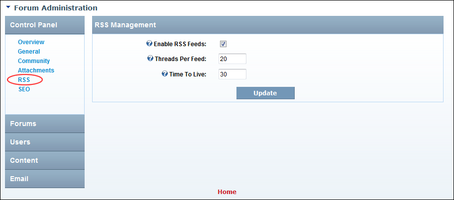

Managing RSS Feeds
How to enable or disable an RSS Feed being created for all public forums, as well as configure related settings.
- Go to the Forum Administration page. See "Navigating to the Forum Admin Page"
- In the left-hand panel, select Control Panel > RSS. This displays the RSS Management window.
- At Enable RSS Feeds, to enable RSS feeds for all public forums - OR - to disable and skip to Step 6.
- In the Threads Per Feed text box, enter the number of post threads to be displayed in the feed. The default value is 20 threads.
- In the Time To Live text box, enter the frequency in minutes that the RSS is cached before refreshing. The default value is 30 minutes.
-

Manage RSS Feeds for Forums